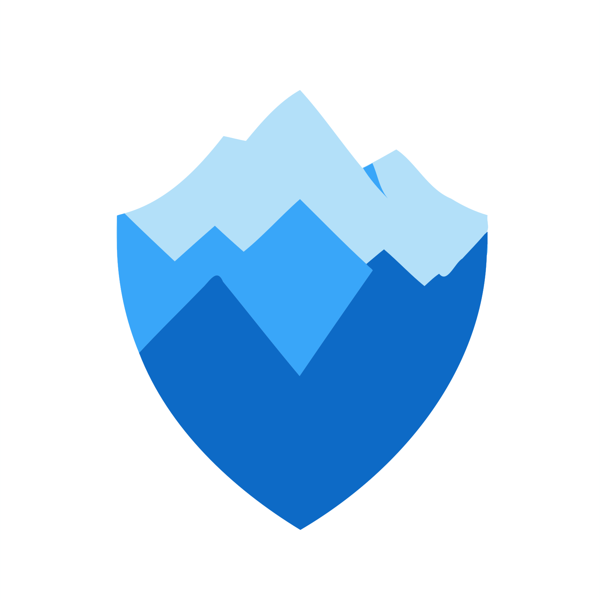

Misti
 Misti
Misti is a static analysis tool designed for smart contracts on the TON blockchain written in Tact.
Features
- Code Analysis: Built-in suite of 41 detectors for identifying security vulnerabilities and anti-patterns.
- CI/CD Integration:
Integrate Misti into your CI/CD pipeline to ensure continuous code quality checks.
- Custom Detectors: Create custom detectors to solve specific problems in your code or to provide a thorough security review if you are an auditor.
- Custom Tools: Extend Misti with your own tools for custom analysis and reporting capabilities.
Getting Started
- (optional) Install Soufflé to enable more built-in detectors.
- Install Misti:
npm install -g @nowarp/misti
- Run Misti by specifying a Tact contract, project config, or directory to check:
misti path/to/src/contracts
See Misti Configuration for available options, or Developing Misti for advanced instructions. Blueprint users should refer to the appropriate documentation page.
Resources
- nowarp.io: We are doing other TON Security stuff beyond Misti.
- Scanner: A mass-scan tool that runs static analysis over all the publicly available contracts.
- Documentation: Comprehensive guide on detectors, architecture, and development.
- API Reference: Useful for contributors or developers creating custom detectors.
- Blueprint Plugin: A plugin for the Blueprint Framework to enhance your workflow.
- Community Chat: Join the conversation and get help with Misti-related questions.